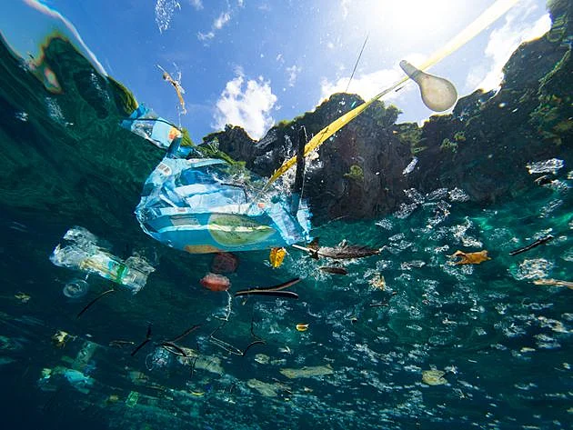
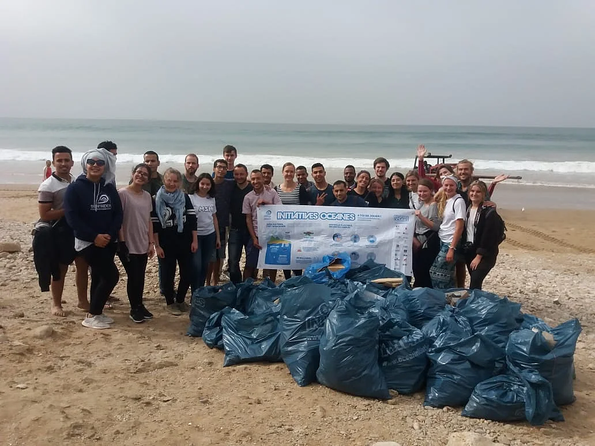
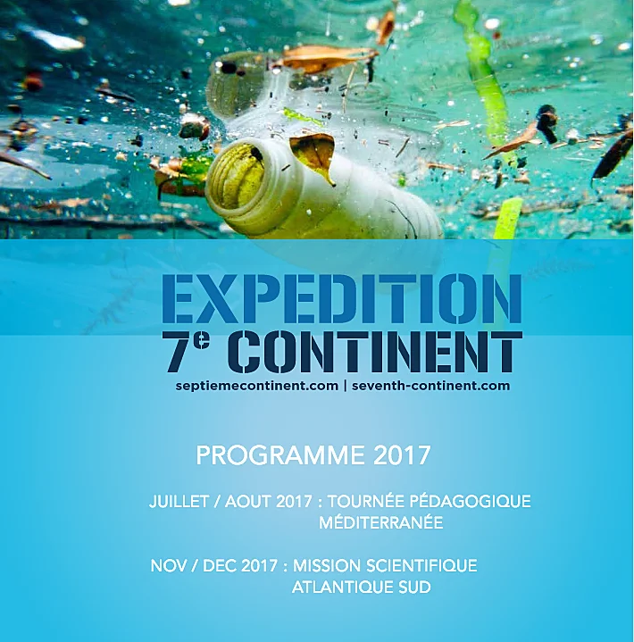

Ce problème écologique devient une urgence. Les soluons technologiques cherchant à filtrer les mers sont peu adaptées à la situaon. Il est donc primordial de sensibiliser la populaon pour changer nos comportements envers les déversements de déchets afin de rendre nos mers et océans plus propres et plus vivable.
Des méthodes technologiques sont mises en place pour dépolluer nos océans, mais à l’échelle individuelle le plus efficace est de changer nos comportements.
La suppression totale des déchets marins est considérées comme impossible par les chercheurs. La vraie soluon réside dans la modificaon de nos habitudes, qui commence par des gestes simples. Il suffit simplement de ne plus se débarrasser de ses déchets dans les océans et les mer pour réduire de manière considérable la proporon de plasque dans les fond marins.
Iniaves Océanes au Maroc.
Des organisaons comme Surfrider lancent des opéraons tel que « iniaves Océanes ». Accompagnés de volontaires ces mouvements ont pour but de neoyer les plages En 2018 cee même associaon a récolté 256 kg de déchets plasques, 256 kg de déchets qui aurait pu envahir nos océans. Des chiffres qui soulignent une urgence écologique. Mais encore, la société Expédion Sepème Connent s’est lancé dans des expédions depuis 2013, dans le but d’étudier le connent de plasque. Depuis 2015 elle organise des journées pédagogiques en collaboration avec l’agence de l’eau Seine Normandie à fin de ramasser des déchets en compagnie de collégiens et de lycéens.
Programme d’ « Expedion 7e connent » de 2017
De plus elle organise des mouvements médiaques autour de la sensibilisaon à fin de mere en œuvre des soluons par les collecvités. De plus le skipper Patrick Deixonne A rejoint ce mouvement pour alerter le public sur ce problème.
Les progrès technologiques peuvent envisager une filtraon des océans, même si cela n’est pas à la portée de tout le monde. Boyan Slat, un néerlandais, a développer un projet nommé Ocean Cleanup meant en scène un prototype de barrières floantes. Fabriqué avec deux bras gonflables, et ne nécessitant aucun bateau, cee invenon récupère les débris à l’aide des courants des fonds marins, qui les amène jusqu’à un filet permeant de les sorr de l’eau. D’ici 2020 il souhaite créer et déposer dans l’océan Pacifique, le même disposif 100 fois plus gros.

Premier prototype de Océan Cleanup créer par Boyan Slat.
« En déployant un de ces systèmes durant 10 ans, nous pourrions neoyer la moié de la grande plaque de déchets du Pacifique » Boyan Slat
À l’échelle naonale la France a interdit l’usage de sac plasque dans le commerce en juillet 2016 afin de ne pas aggraver ce problème déjà considéré comme impératif.
La pollution des océans
À propos